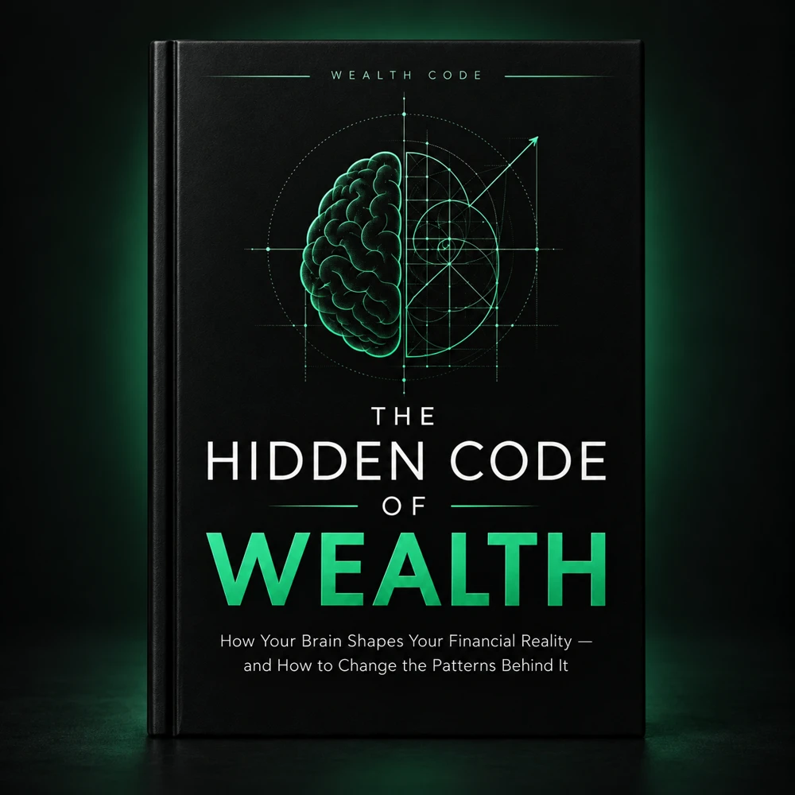
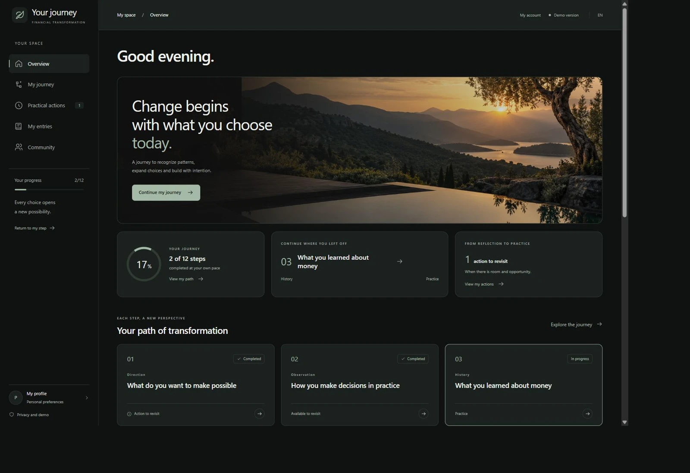

The raise that changes everything. Except your savings.
More income arrives. A few expenses grow. Months later, the breathing room you expected still feels out of reach.
Build the identity that sustains wealth
You know what you should do with money. So why do the same decisions keep showing up?
Explore the beliefs, emotions, and habits behind your financial choices through the book and To Be Wealthy’s 12-step guided journey.
A more conscious relationship with money begins with understanding.
01 / THE PATTERNS BENEATH THE SURFACE
The difficult part isn’t always the math. It’s what happens in the moment a decision is made.
More income arrives. A few expenses grow. Months later, the breathing room you expected still feels out of reach.
You weren’t planning to spend. But for a moment, buying something offers relief—and the budget becomes tomorrow’s problem.
“Money is always scarce.” “Success means looking successful.” A familiar belief can keep influencing choices long after life has changed.
These moments aren’t a verdict on your character. They’re patterns worth understanding.
02 / TO BE WEALTHY
Before a financial choice becomes a number, it passes through a belief, a feeling, and a familiar way of responding.
Notice inherited beliefs and the stories you tell yourself about money.
Recognize the pressure, relief, or uncertainty present when you choose.
Try a considered response. Reflect on what happened. Adjust and return.
To Be Wealthy connects beliefs, perception, emotion, identity, habits, and decisions. Observation helps you see the pattern. Reflection helps you question it. Practice gives you a way to explore something different.
See how the journey works03 / THE PHILOSOPHY OF LIN ZHI
Before you change what you do with money, understand what money does to you.
To Be Wealthy begins with a simple idea from Lin Zhi: financial decisions deserve more than a rule to follow. They deserve an understanding of the person making them.
This approach brings attention to everyday choices, including what you avoid, what you pursue, and what you repeat, so you can begin to act with greater intention.
04 / CHOOSE YOUR PATH
Start with understanding. Make room for practice.
Choose the experience that fits where you are.
A deeper look at the patterns behind your relationship with money.

$14.99USD
Digital book · One-time payment
The guided journey and community are not included.
Read and revisit at your own pace.
Join the evolving platform and practice more intentional choices.

$49USD
12 months of access · One-time payment
Early access: content is still in development. The eBook is not included. No automatic renewal.
12 months start at payment approval, while content is being developed.
The finished book and the evolving Guided Journey together.
$59USD
Book + guided journey · One-time payment
The Journey has provisional exercises and no videos yet. Save $4.99 compared with buying separately. No automatic renewal.
The 12 months begin when payment is approved.
Checkout is temporarily unavailable while purchase delivery is being verified.
The Guided Journey is still being built. Its 12-stage framework and progress features are available; exercises are provisional and video lessons are not available yet. New material will be released progressively, without a fixed completion date. Your 12 months of platform and community access begin when payment is approved, even while content is still being developed. The book is a separate, complete product with permanent access while the purchase remains valid. There is no automatic renewal.
05 / INSIDE THE GUIDED JOURNEY
A structured space to pause, reflect, and take an idea into an everyday decision. Return to the stages that matter to you during your 12 months of access.
Explore your choices through prompts and exercises, with room to move at your own pace.
Record a response, try a small action, and come back to what you noticed.
Keep track of your stage progress and the actions you want to revisit.
Share experiences for administrator approval and read approved contributions. Participant replies are not available in the current version.
Video lessons are being prepared. The current platform contains reserved video spaces and exercise content awaiting final editorial validation.
06 / A DIFFERENT APPROACH
A useful rule can tell you what to do. Understanding your patterns helps you examine what happens when it’s time to do it.
“Stay within your budget.”
“Think about the long term.”
“Be more consistent.”
What pulls you away from a plan?
What makes the future feel distant?
What could help you return to a practice?
Understanding your patterns becomes useful when you bring it into everyday choices, notice what happens, and adjust as you go. You don’t have to get every decision right; what matters is returning to the habits you want to build.
07 / A LITTLE MORE CLARITY
Yes. The book and journey start with everyday money decisions. You can begin by noticing a pattern, even if you have never explored financial psychology before.
No prior financial knowledge is required. This is an educational exploration of behavior and self-awareness, rather than a course in investment selection or financial calculations.
The 12-stage framework is available now, but the learning content is still being built. Exercises are provisional, and video lessons are not available yet. Material will be added progressively without a fixed completion date. Your 12-month access starts when payment is approved.
No. Each option is a one-time purchase. Journey and Complete Code purchases include 12 months of platform and community access, with no automatic renewal.
Platform and community access ends when the access period expires. No renewal or continued platform access is promised. If you purchased the book, permanent book access is separate from the platform access period.
The Book and Complete Code options include permanent access to the digital book. A refunded or charged-back purchase does not retain access. The standalone Guided Journey does not include the book.
No. The $14.99 book purchase includes only the eBook. Choose the $49 Guided Journey for the platform, or the $59 Complete Code for both the book and the journey.
You can submit your experiences for administrator approval and read approved participant contributions. Publications are moderated. Participant replies, direct messages, and comments are not available in the current version.
Once purchasing is available, payment will take place through Hotmart. After payment approval, access instructions are sent to the email address used at checkout. Sign in with that same email address and enter the access code sent to you. A pending payment does not unlock content.
YOUR NEXT CHAPTER
Begin with curiosity. Understand your patterns.
Make your next financial decision a more conscious one.